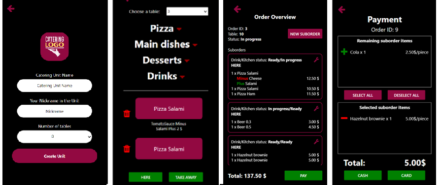

Catering System
(BSc Thesis)
React Native
ASP.NET
Core
Entity
Framework
SignalR
SQL Server
The mobile application facilitates collaboration among a catering unit staff, minimizes the need
for
communication, and thereby reduces the possibility of errors. Its simple structure and
role-based customization not only ensure fast but also enjoyable use for the entire staff.
For more details and screenshots, click on the link below!
